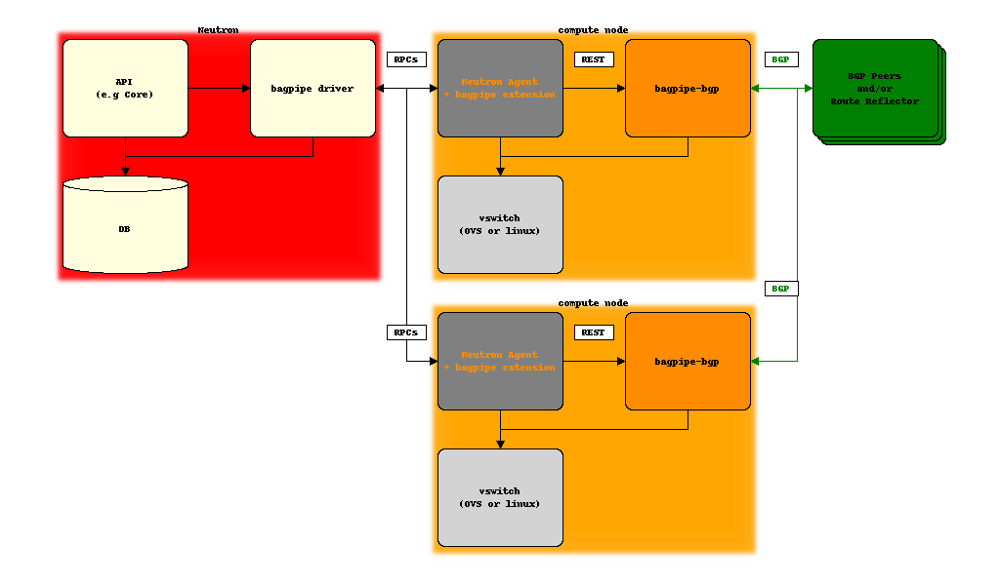

Design overview¶
The common design choices underlying bagpipe archiecture are:
- on Neutron server, allocate and associate BGP VPN constructs necessary to realize Neutron API abstractions: network, router, service chain, BGP VPN interconnection, etc.
- pass the information about these BGP VPN constructs to the compute node agent via Openstack Neutron message bus (typically, but not necessarily RabbitMQ)
- on compute node, a bagpipe extension of the Neutron agent (OVS or linuxbridge) passes the information to the local implementation of BGP VPN extensions (bagpipe-bgp_) that will exchange BGP VPN routes and populate the dataplane
- depending on the use cases, BGP VPN routes are exchanged between compute nodes, between compute nodes and DC gateway IP/MPLS routers, or both ; the strategy to scale this control plane will depend on the deployment context but will typically involve BGP Route Reflectors and the use of the RT Constraints pub/sub mechanism (RFC4684)
- traffic is exchanged with an overlay encap, with VXLAN as the typical choice for vswitch-to-vswitch, and MPLS-over-GRE or MPLS-over-UDP as the target for vswitch-to-DC-gateway traffic
